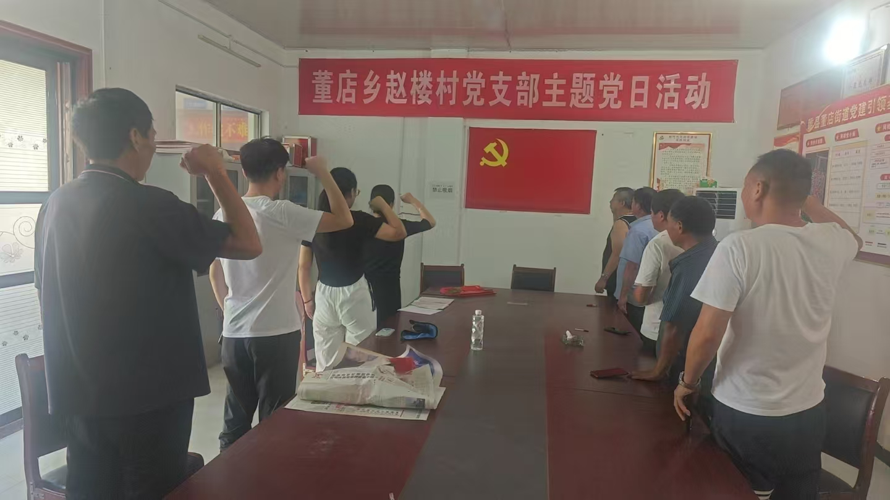
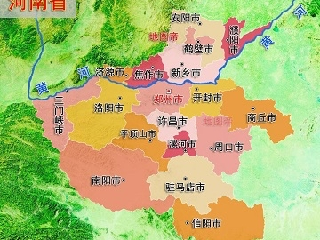

青衿治乡·服务兴村
河南省大学生乡村治理与公共服务协同赋能计划调研报告，聚焦河南省大学生返乡创业、参与乡村治理与公共服务的核心问题，通过问卷调研与实地访谈相结合的方式，全面分析大学生参与乡村发展的意愿、倾向、技能储备，以及河南乡村治理的短板、公共服务的需求，为推动大学生赋能乡村治理提供数据支撑与实践参考。
调研核心概况
本次调研覆盖河南省豫北、豫中、豫东、豫南、豫西多个区域，问卷受访者以女性、专科学历、工科专业为主，对豫北乡村关注度最高。调研显示，大学生返乡创业潜在意愿较强但观望情绪显著，创业倾向集中在乡村旅游、文创、农村电商等领域，与乡村产业发展需求高度契合。
当前河南乡村治理核心短板为数字化治理人才短缺、公共服务供给不足，生态治理与教育帮扶是村民最欠缺的公共服务。大学生参与乡村治理的价值获广泛认可，尤其在政策落地执行、公共服务优化方面的作用突出，村民对大学生参与公共服务的接受度超八成，为大学生赋能乡村发展奠定了良好基础。